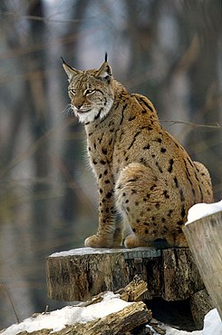
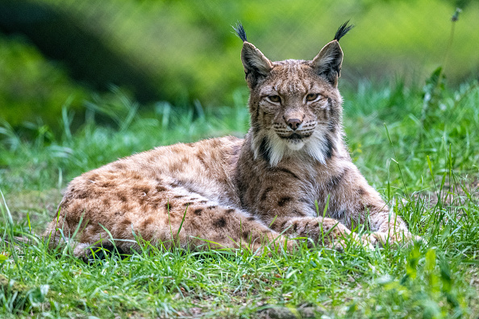

Lynx es un género de mamíferos carnívoros de la familia Felidae coloquialmente conocidos como linces. Se conocen cuatro especies caracterizadas por su tamaño medio, fuertes patas, largas orejas, cola corta y cuerpo más o menos moteado. Todas las especies habitan exclusivamente en el Hemisferio Norte, en Eurasia y Norteamérica (de donde parecen ser originarios). El llamado lince africano (Caracal caracal), que habita en África y gran parte de Asia Central y Occidental, es en realidad un felino escasamente emparentado que guarda algunas semejanzas externas con los representantes del género Lynx fruto de la convergencia evolutiva, como son su cola, excepcionalmente corta (poco más que un simple muñón), y sus grandes orejas, coronadas por largos penachos de pelo negro en la punta que sirven para incrementar su, ya de por sí, gran audición. También existen unos característicos mechones de pelo largo en las mejillas.
El pelaje posee diferentes tonalidades según la especie y la subespecie de la que se trate. Los linces canadiense y euroasiático oscilan entre el pardo y el amarillento, desarrollando un pelaje más largo y grisáceo en invierno. El lince ibérico es de color pardo mientras que el lince rojo, como su nombre indica, posee un manto pardo-rojizo. Las cuatro especies poseen manchas y rayas cuya densidad varía según los individuos. La especie más grande es la euroasiática, que puede llegar a alcanzar los 30 kg de peso, y la más pequeña la ibérica, que raramente llega a los 20 kg.
Según parecen indicar los estudios paleontológicos y genéticos los antecesores del grupo divergieron hace seis millones de años en regiones de América del Norte extendiéndose posteriormente por toda Eurasia. No está del todo clara la situación filogenética de las cuatro especies del género siendo una de las hipótesis más aceptada aquella que postula que el antepasado de las cuatro especies sería la especie extinta denominada Lynx issiodorensis descubierta por primera vez en China. Lynx rufus se habría separado tempranamente de la raíz del grupo mientras que las otras tres especies aparecieron hace 1.6 millones de años.
La dieta del lince ibérico está compuesta fundamentalmente por conejos de monte Oryctolagus cuniculus, que constituyen la presa mayoritaria, y en ocasiones casi exclusiva, en todas las localidades donde se ha estudiado. En una muestra de tractos digestivos procedentes de Sierra Morena y Montes de Toledo, la frecuencia de aparición de conejos fue del 69% (Delibes et al., 1975). Sobre una muestra mayor de las mismas áreas montañosas, Aymerich (1982) halló restos de conejos en el 77% de los estómagos. La frecuencia de aparición de conejos en excrementos de lince ibérico fue 95% en las Sierras de Gata y Lagunilla, (Delibes et al., 1975) y 96% y 76% en Malcata, Portugal (Palma, 1980 y Castro, 1994, respectivamente); ambas localidades se encuentran próximas en el Sistema Central occidental. La frecuencia de aparición fue también muy alta (96%) en Andújar, Sierra Morena oriental (Gil-Sánchez et al., 1997). La dieta del lince en Sierra Morena (basado en el análisis de 360 excrementos) se basa en conejos, seguido de perdices. No se han observado variaciones estacionales en la dieta, aunque los conejos jóvenes son seleccionados cuando están disponibles (desde finales del invierno hasta principios del verano) (Gil-Sánchez et al., 2006).1 Doñana es la localidad que reúne más información relativa a la dieta del lince y sus variaciones espaciales y temporales, basada en el análisis de 3.209 muestras fecales. Las frecuencias de aparición del conejo en los distintos trabajos son 88% (Delibes, 1980b), 70% (en un año seco; Beltrán y Delibes, 1991), 100% (Calzada y Palomares, 1996), 99% (Fedriani et al., 1999) y 99% (Palomares et al., 2001). La estenofagia tiende a ser máxima al final del verano (>90% de la biomasa consumida son conejos), mínima en otoño e invierno (85%), y en ascenso gradual durante el resto del año (Delibes, 1980a). El mismo patrón estacional se ha encontrado en condiciones de sequía (Beltrán y Delibes, 1991). No obstante, hay datos que indican claramente que el predominio absoluto del conejo en la dieta del lince se mantiene a lo largo de todo el año, con independencia de las fuertes fluctuaciones temporales en la disponiblidad de esta presa (Fedriani et al., 1999; Palomares et al., 2001). Por ejemplo, en un estudio de cuatro años en el norte del Parque Nacional de Doñana, Palomares et al. (2001) encontraron conejos en >98% de los excrementos analizados en todas las estaciones (100% en 10 de las 16 estaciones consideradas), excepto en otoño de 1994 (92%). El resto de la dieta está compuesta por presas que aparecen en muy baja frecuencia (Calzada, 2000). Por ejemplo, Delibes (1980a) describe 18 especies presa (casi exclusivamente aves y micromamíferos) cuya frecuencia de aparición es inferior al 1%. Salvo excepciones (Castro, 1994, ver más abajo), ninguna otra especie o grupo de especies aparece en >4,2% de las muestras de Malcata (Palma, 1980). Las presas secundarias aparecen sobre todo en otoño e invierno, cuando la disponibilidad de conejos a lo largo del ciclo anual tiende a ser mínima. En esta época los ungulados pueden llegar a adquirir cierta importancia en algunas áreas de Doñana, donde los gamos (Dama dama), que son localmente abundantes, alcanzan hasta el 5-10% de la biomasa en la dieta del felino (Delibes, 1980a; Beltrán et al., 1985). Los ciervos (Cervus elaphus), siendo más abundantes, muy rara vez son consumidos, debido aparentemente a la limitada capacidad de los linces para hacerse con una presa de tales dimensiones (los individuos depredados suelen ser juveniles; Delibes, 1980a; Beltrán et al., 1985) y a los riesgos que comporta para el lince su captura. Las presas de mediano tamaño que pueden alcanzar una cierta importancia son la perdiz roja (Alectoris rufa) (hasta una frecuencia máxima de aparición -en digestivos- del 15%; Aymerich, 1982) y, según localidades, la liebre (Lepus granatensis) (hasta un 7%, Aymerich, 1982), y las anátidas (hasta un 18%, Delibes, 1980a). Completan la dieta varias especies de micromamíferos, pequeñas aves y, muy raramente, reptiles (Delibes, 1980a; Aymerich, 1982; Calzada, 2000). Castro (1994) encontró roedores en el 40% de sus muestras. La importancia de estas presas de pequeña talla es habitualmente muy inferior (p.ej. Fedriani et al., 1999; Palomares et al., 2001). Existe, en resumen, escasa variación geográfica en la dieta del lince ibérico. La infomación acumulada indica que esta especie muestra un alto grado de especialización y dependencia de los conejos como fuente de alimento, con una capacidad muy limitada de responder funcionalmente a una reducción en la disponibilidad de los mismos. Al mismo tiempo, las tendencias en distribución y abundancia descritas para el lince a todas las escalas son consistentes con una fuerte respuesta numérica ante las fluctuaciones en la disponibilidad de conejos. El declive de las poblaciones de conejos en gran parte de la península Ibérica durante los últimos 50 años ha sido probablemente el principal factor responsable de la actual situación de amenaza del lince ibérico (Delibes et al., 2000; Rodríguez y Delibes, 2002).